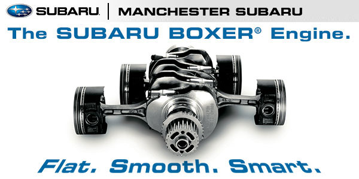
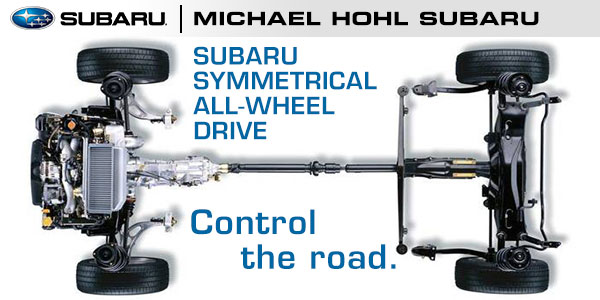
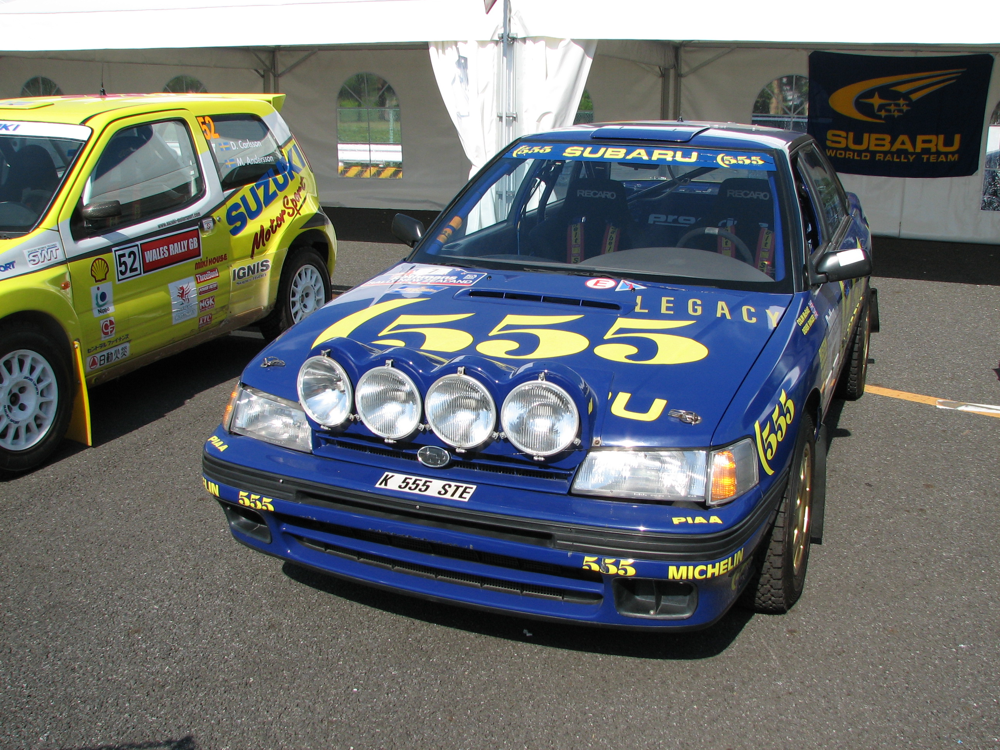
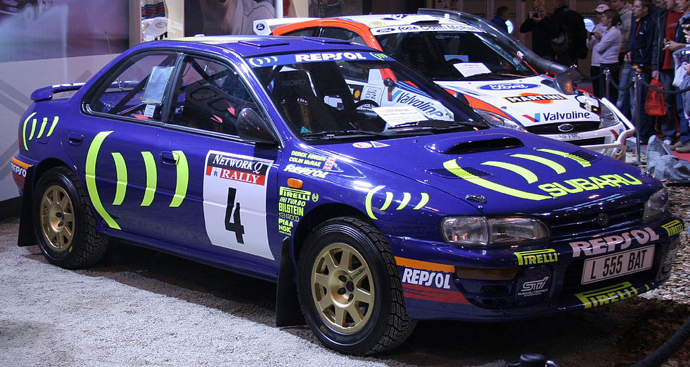
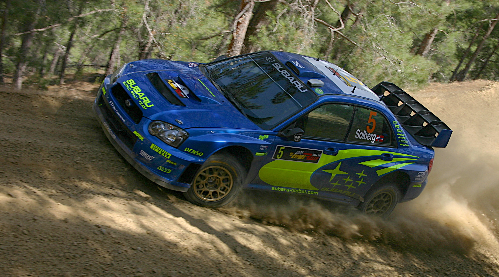
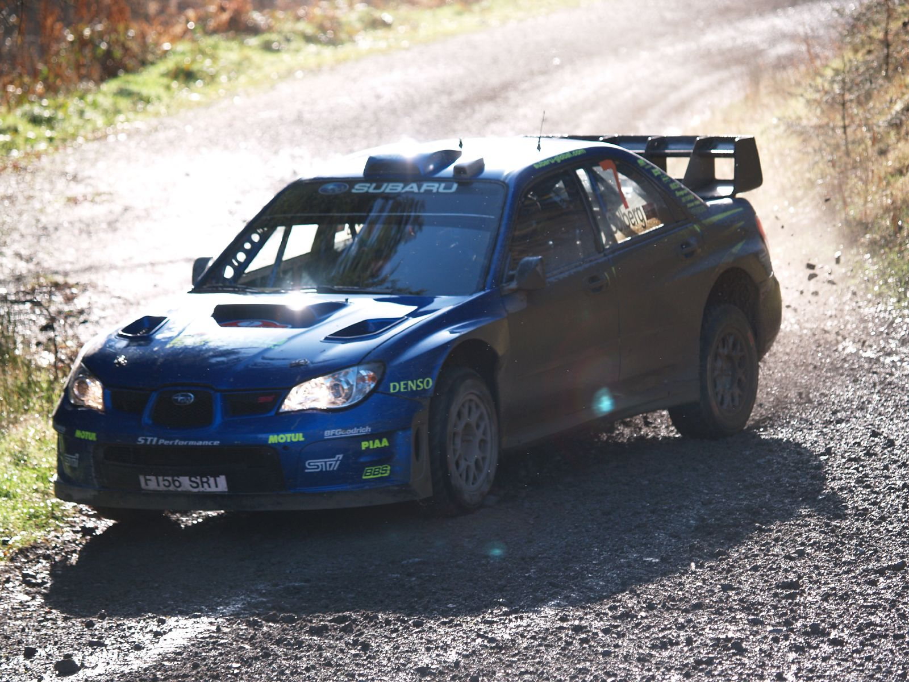

BRRRRRRR
| Model name | Engines | Production years | Variables |
|---|---|---|---|
| Impreza | 1.5 - 2.5 liters | 1992-present | GT (first model), WRX, STI |
| Legacy | 2.0-3.6 | 1989-present | |
| Outback | |||
| Forester | 1997-present | ||
| Tribeca | |||
| XV | |||
| BRZ | |||
| Levorg |
A flat engine is an internal combustion engine with horizontally-opposed cylinders. Typically, the layout has cylinders arranged in two banks on either side of a single crankshaft and is otherwise known as the boxer, or horizontally-opposed engine. The concept was patented in 1896 by engineer Karl Benz, who called it the "contra engine".
A boxer engine should not be confused with the opposed-piston engine, in which each cylinder has two pistons but no cylinder head. Also, if a straight engine is canted 90 degrees into the horizontal plane, it may be thought of as a "flat engine". Horizontal inline engines are quite common in industrial applications such as underfloor mounting for buses. True boxers have each crankpin controlling only one piston/cylinder while the 180° engines, which superficially appear very similar, share crankpins. The 180° engine, which may be thought of as a type of V engine, is quite uncommon as it has all of the disadvantages of a flat engine, and few of the advantages.
Symmetrical All Wheel Drive (also known as Symmetrical AWD or SAWD) is a full-time four wheel drive system developed by Japanese automobile manufacturer Subaru. The SAWD system consists of a longitudinally mounted boxer engine coupled to a symmetrical drivetrain with equal length half-axles. The combination of the symmetrical layout with a flat engine and transmission balanced over the front axle provides optimum weight distribution with a low center of gravity, improving car handling characteristics. Since 1996, most international market Subaru vehicles include SAWD as standard equipment, with the rear wheel drive BRZ and kei cars as the exceptions.
The Subaru World Rally Team (SWRT) was Subaru's World Rally Championship (WRC) team. It used a distinctive blue with yellow color scheme that is a throwback to the sponsorship deal with State Express 555, a BAT cigarette brand popular in Asia. 555 logos were found on Subaru cars from 1993 to 2003. Subaru's WRC efforts date back to 1980, however, the team, in its current form, has existed since 1989, when the British firm Prodrive took over its operations, and its base moved from Japan to Banbury, England.
Subaru used the team to showcase its symmetrical all wheel drive technology. It has credited the increased sales of its vehicles, especially the Subaru Impreza, with its success in the World Rally Championship, in addition to popularizing its all-wheel-drive system.
Its 2008 season drivers were Petter Solberg with co-driver Phil Mills, and Chris Atkinson with co-driver Stéphane Prévot. David Richards was the team's Principal, and a founder and chairman of Prodrive. Paul Howarth was the team's operations director and team manager. He replaced David Lapworth in 2006. Richard Taylor is the team's managing director.
The team was historically an extremely strong one, competing in the WRC longer than any other manufacturer team in their current form. It has won the manufacturers' championship three times in 1995, 1996, and 1997, and the drivers' championship three times, in 1995, 2001, and 2003. The team's performance since the 2005 season, when Petter Solberg secured second position in the driver's championship, has been far lower than expected and the subject of much criticism. The team's 2006 season, one that has been described as "disappointing" by Richard Taylor, was the subject of a Discovery Channel series called Engineering the World Rally which aired in 2007. The 2007 season was little better, and called the "second season from hell" by Phil Mills. The team withdrew from WRC competition at the end of the 2008 season due to widespread economic downturn.
   